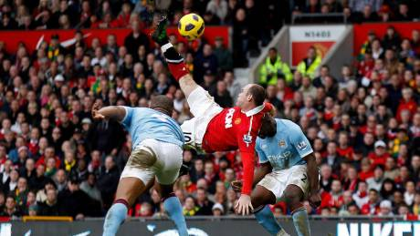
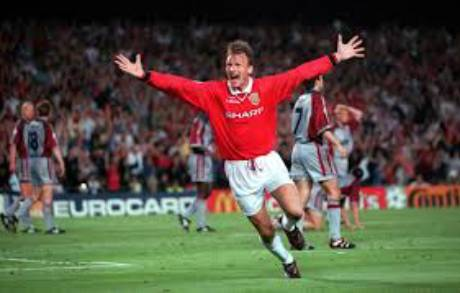

Fótbolti er gríðarlega skemmtileg íþrótt og því ætla ég að ræða aðeins um hana.
Manchester united er liðið sem að ég hhef haldið með í ensku deildinni frá barnsaldri. Ég fylgist með öllum leikjum þeirra, Man Utd gengur alls ekkert vel í augnablikinu og á ég stundum erfitt með að horfa á.
Þegar skjár er minni en 60em (960px) þá á textinn í vefsíðunni að dragast saman og vera sýnilegur, prófaðu að nota stílbragðið "max-width".
Gagnlegar grunnslóðir Video af youtube
þetta var leikur Man Utd gegn liverpool árið 2017, þessi viðureign er talinn vera stærsti leikur í heimi og er mikil spenna sem ríkir yfir fyrir leikji milli þessa liða.
Leikvangur Manchester United
Heimavöllur Manchester United